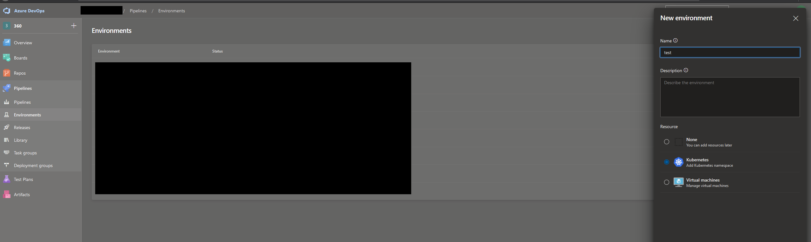

<!DOCTYPE html>
<html>

  <head>
	<meta name="generator" content="Hugo 0.54.0" />

  <title>
      
      Hallgeir
      
  </title>

</head>


  <body>

    

	
<div class="h-feed">

	
	
      <div class="h-entry">
		
			<h1><a href="https://blog.hallgeir.org/2021/03/22/spring-cleaning-coffee.html">Spring cleaning, coffee roaster and falling asteroids</a></h1>
		

        <a href="https://blog.hallgeir.org/2021/03/22/spring-cleaning-coffee.html" class="u-url"><time class="dt-published" datetime="2021-03-22 09:38:48 &#43;0200">Mar 22, 2021</time></a>

        <div class="e-content">
         	<p>I&rsquo;ve finally gotten around to some &ldquo;spring cleaning&rdquo; on my domain, sites and repos.</p>

<ul>
<li>This blog is now accessible from <a href="https://blog.hallgeir.org">https://blog.hallgeir.org</a>. The micro.blog URL <a href="https://hallgeir.micro.blog">https://hallgeir.micro.blog</a> will also work just fine of course.</li>
<li>I&rsquo;ve made my little browser-based game Gravistroids available from GitHub Pages at: <a href="https://hallgeirl.github.io/gravitroids/">https://hallgeirl.github.io/gravitroids/</a>. There&rsquo;ll be instructions on the site with a link to start the game. Crash gently!</li>
<li>You may or may not know, but I&rsquo;ve made myself a coffee roaster. Currently it has about 30kg of coffee behind it, so it&rsquo;s doing its job well. It is controlled through the Artisan roasting software, and I used an Arduino to set this up. I&rsquo;ve created a github repo for this project: <a href="https://github.com/hallgeirl/coffee-roaster">https://github.com/hallgeirl/coffee-roaster</a>, and I&rsquo;ve recently cleaned up the docs a bit. Don&rsquo;t hesitate to ask if you have questions about this.</li>
</ul>

<p>Until next time!</p>

        </div>
      </div>
    
      <div class="h-entry">
		
			<h1><a href="https://blog.hallgeir.org/2021/03/12/merging-git-repos.html">Merging git repos into subfolders with history</a></h1>
		

        <a href="https://blog.hallgeir.org/2021/03/12/merging-git-repos.html" class="u-url"><time class="dt-published" datetime="2021-03-12 11:47:39 &#43;0200">Mar 12, 2021</time></a>

        <div class="e-content">
         	<p>Did you know you can merge a git repo into a subfolder of another, while keeping the commit history of the repo you&rsquo;re merging in? It was surprisingly simple. Here&rsquo;s how you do it:</p>

<pre><code># Navigate to the repo folder where you're merging into
cd path-to-destination-repo

# Add a remote that points to the repo you're merging in (replace &lt;repo-url&gt; with the actual URL obviously)
git remote add tobemerged &lt;repo-url&gt;

# Fetch changes from the new remote
git fetch tobemerged

# Merge the changes from remote master, but don't commit, and keep the changes from destination.
# This shouldn't actually do anything to the destination repo filesystem.
git merge -sours --no-commit --allow-unrelated-histories tobemerged/master

# Read the files from the repo you're merging in, and put them in the specified subfolder
git read-tree --prefix=subfolder/for/merge/ -u tobemerged/master

# Commit the merge
git commit -m&quot;Merged repos&quot;
</code></pre>

<p>That&rsquo;s it! You should get the full git log from both repos with <code>git log</code>.</p>

<p>I&rsquo;m not going to take credit for figuring out this all myself - it&rsquo;s based on Eric Lee&rsquo;s answer in this StackOverflow post:
<a href="https://stackoverflow.com/questions/13040958/merge-two-git-repositories-without-breaking-file-history">https://stackoverflow.com/questions/13040958/merge-two-git-repositories-without-breaking-file-history</a></p>

        </div>
      </div>
    
      <div class="h-entry">
		
			<h1><a href="https://blog.hallgeir.org/2020/09/24/creating-a-multitenant.html">Creating a multi-tenant IdentityServer federation gateway</a></h1>
		

        <a href="https://blog.hallgeir.org/2020/09/24/creating-a-multitenant.html" class="u-url"><time class="dt-published" datetime="2020-09-24 16:00:00 &#43;0200">Sep 24, 2020</time></a>

        <div class="e-content">
         	

<p><a href="https://github.com/IdentityServer">IdentityServer</a> is quite an awesome framework for creating your own OAUTH-based authentication server in .NET Core. At its core, its purpose is to provide OAUTH endpoints to allow clients request access tokens to then call APIs. IdentityServer also <a href="https://docs.identityserver.io/en/dev/topics/federation_gateway.html">supports being used as a federation gateway</a>, by utilizing the built-in authentication system in .NET Core.</p>

<p>This is great if you&rsquo;re creating an authentication server that has a fixed number of authentication providers that serves applications that should use the same authentication providers, or a subset of these. However, in some scenarios, like the one I have in my own organization, where we allow customers to bring their own authentication, using OpenID Connect or WS Federation. We have a lot of customers on our cloud solution, so setting up each of the authentication providers statically in the authentication server is not going to work.</p>

<p>There&rsquo;s some resources for this online, but it was hard to find concrete examples for how to achieve this. Here&rsquo;s a few tips that might be helpful if you&rsquo;re trying to achieve this in your application. I&rsquo;ll show the steps here for implementing federated OpenID Connect here, but the steps for adding support for WS Federation is more or less exactly the same (just swap out &ldquo;OpenIdConnect&rdquo; with &ldquo;WsFederation&rdquo; in most of the class names).</p>

<h2 id="the-setup">The setup</h2>

<p>We will define our authentication services in our ConfigureServices method:
<pre>
var authBuilder = services.AddAuthentication();
authBuilder.Services.TryAddEnumerable(ServiceDescriptor.Singleton<IPostConfigureOptions<OpenIdConnectOptions>, OpenIdConnectPostConfigureOptions&gt;());
authBuilder.AddRemoteScheme<OpenIdConnectOptions, MultitenantOpenIdConnectHandler>(&ldquo;openid-connect&rdquo;, &ldquo;OpenID Connect&rdquo;, options =&gt;
{
    options.CallbackPath = &ldquo;/signin-oidc&rdquo;;
});</p>

<p>services.AddSingleton<IOptionsMonitor<OpenIdConnectOptions>, OpenIdConnectOptionsProvider&gt;();
services.AddSingleton<IConfigureOptions<OpenIdConnectOptions>, OpenIdConnectOptionsInitializer&gt;();
</pre></p>

<p>Notice that we don&rsquo;t just do AddOpenIdConnect() - we want to register a custom OpenIdConnectHandler that is multi-tenant aware. We&rsquo;ll get back to those details soon. Also notice that we register a custom IOptionsmonitor<OpenIdConnectOptions> and IConfigureOptions<OOpenIdConnectOptions> class. These will be used to fill in the client ID, authority and other parameters needed to authenticate at runtime.</p>

<p>Then we&rsquo;ll configure the login URL for IdentityServer:
<pre>
services.AddIdentityServer(options =&gt;
{
  options.UserInteraction.LoginUrl = &ldquo;/api/challenge/redirect&rdquo;;
  options.UserInteraction.LoginReturnUrlParameter = &ldquo;returnUrl&rdquo;;
})
</pre>
The /api/challenge/redirect endpoint will resolve which authentication service to be used for a tenant, based on acr_values where we will add the tenant ID.</p>

<p>Given all this, the authentication flow will be as follows:</p>

<ol>
<li>Initial page load</li>
<li>Redirect to /connect/authorize?&hellip;</li>
<li>Redirect to /api/challenge/redirect?returnUrl=&hellip; - this looks up the authentication scheme to be used (e.g. openid-connect or ws-federation based on tenant ID, which we send through acr_values).</li>
<li>Redirect to /api/challenge?scheme=&hellip;&amp;returnUrl=&hellip;&amp;tenantId=&hellip;.</li>
<li>Redirect to /api/challenge calls Challenge() with the specified scheme and returnUrl, which invokes the ASP.NET Core authentication mechanisms.</li>
<li>Redirect to external auth provider. This is where the user logs in with username+password.</li>
<li>Redirect to callback /signin-oidc/<tenant-id></li>
<li>Redirect to the page you wanted to load.</li>
</ol>

<h2 id="the-challenge-endpoint">The challenge endpoint</h2>

<p>First we need to create an endpoint to route the user to an endpoint which authenticates the user. This involves a lookup in a DB or something similar to get the ASP.NET Core authentication scheme for that tenant. We pass the tenant ID as in acr_values. More on that later.
<pre>
[HttpGet]
[Route(&ldquo;redirect&rdquo;)]
public async Task<IActionResult> Redirect(string scheme, string returnUrl)
{
    var authContext = await _interaction.GetAuthorizationContextAsync(returnUrl);
    var tenantId = authContext.Tenant;
    // Look up the tenant&rsquo;s authentication provider here. This can be a database lookup. This should resolve to either: openid-connect or ws-federation
    var scheme = GetAuthenticationSchemeForTenant(tenantId);
    return Redirect(string.Format(&ldquo;/api/challenge?scheme={0}&amp;tenantId={1}&amp;returnUrl={2}&ldquo;, theScheme, tenantId, Uri.EscapeDataString(returnUrl)));
}
</pre></p>

<p>Then for the actual challenge endpoint, it&rsquo;s quite bare bone. Note that you should validate the input here (return URL, etc.), but for brevity, I&rsquo;ve excluded this here. This is very standard, almost taken straight out of the quickstart UI for IdentityServer4.</p>

<pre>
[HttpGet]
[Route("")]
public async Task<IActionResult> Challenge(string scheme, string returnUrl, string tenantId)
{
    var props = new AuthenticationProperties
    {
        RedirectUri = "/api/challenge/callback",
        Items =
        {
            { "returnUrl", returnUrl },
            { "scheme", scheme },
        }
    };
    return Challenge(props, scheme);
}
</pre>

<p>Finally you have the challenge callback. I just use the same code as in the quickstart&rsquo;s Callback function, just adapted for using it in the API controller: <a href="https://github.com/IdentityServer/IdentityServer4.Quickstart.UI/blob/main/Quickstart/Account/ExternalController.cs">https://github.com/IdentityServer/IdentityServer4.Quickstart.UI/blob/main/Quickstart/Account/ExternalController.cs</a></p>

<h2 id="serving-configuration-to-the-openidconnecthandler-at-runtime">Serving configuration to the OpenIdConnectHandler at runtime</h2>

<p>As mentioned earlier, we have added a few singletons in our startup code:
<pre>
services.AddSingleton<IOptionsMonitor<OpenIdConnectOptions>, OpenIdConnectOptionsProvider&gt;();
services.AddSingleton<IConfigureOptions<OpenIdConnectOptions>, OpenIdConnectOptionsInitializer&gt;();
</pre>
The whole purpose of these are to serve configuration to the OpenIdConnectHandler at runtime. I have used the implementation of these as described here: <a href="https://stackoverflow.com/questions/52955238/how-can-i-set-the-authority-on-openidconnect-middleware-options-dynamically">https://stackoverflow.com/questions/52955238/how-can-i-set-the-authority-on-openidconnect-middleware-options-dynamically</a>. This works great. One detail that is important to mention here is:</p>

<ol>
<li>Set options.CallbackPath to &ldquo;/signin-oidc/&rdquo; + tenantId; That way, after authentication, tenants are redirected to a tenant-specific endpoint.</li>
<li>When there&rsquo;s no tenant ID, just set it to /signin-oidc. This happens on the first configuration call.</li>
</ol>

<p>As for the tenant provider described in this StackOverflow post, for my usecase this doesn&rsquo;t work because not all URLs are prefixed with the tenant ID. Perhaps that could be done in IdentityServer - but I opted for a different solution. Here&rsquo;s the solution I went with for TenantProvider:</p>

<pre>
public TenantAuthOptions GetCurrentTenant()
{
    var request = _httpContextAccessor.HttpContext.Request;
    string tenant = null;
    PathString remainingPath;
    if (request.Query.ContainsKey("tenantId"))
        tenant = request.Query["tenantId"];
    //OpenID Connect
    else if (request.Path.StartsWithSegments(new PathString("/signin-oidc"), StringComparison.InvariantCultureIgnoreCase, out remainingPath))
        tenant = remainingPath.Value.Trim('/');
    //Do the DB lookup for the tenant authentication options (client ID, etc.)
    return GetTenant(tenant);
}
</pre>

<p>Here we look for the tenant ID in various places:</p>

<ol>
<li>If it&rsquo;s set on the query string, we get it from there. That&rsquo;s needed when you redirect from /api/challenge/redirect to /api/challenge. You COULD probably add the tenant ID to the path on this endpoint instead. That&rsquo;s up to you, and then you wouldn&rsquo;t need to parse the query string.</li>
<li>If we&rsquo;re at the signin-oidc endpoint, we get the tenant ID from the path.
<br /></li>
</ol>

<h2 id="the-multi-tenant-openidconnecthandler">The multi-tenant OpenIdConnectHandler</h2>

<p>As mentioned previously, we can&rsquo;t use the built-in OpenIdConnectHandler in our usecase. The reason is (and I don&rsquo;t know WHY), is that some of the configuration options for the OpenIdConnectHandler is fetched per request, other values are cached seemingly forever after retrieving the configuration once. Most notably, the callback URL: If you use standard OpenIdConnectHandler, it will redirect correctly to /signin-oidc/(tenant-id), however, ShouldHandleRequestAsync() in the OpenIdConnectHandler() will return false, because apparently the CallbackPath is cached. Because of this, the handler won&rsquo;t handle the /signin-oidc/(tenant-id) requests, and you&rsquo;ll get a HTTP 404. I haven&rsquo;t looked into the details on WHY this is, but this is thankfully easily solvable:</p>

<p><pre>
public class MultitenantOpenIdConnectHandler : OpenIdConnectHandler
{
  public MultitenantOpenIdConnectHandler(IOptionsMonitor<OpenIdConnectOptions> options, ILoggerFactory logger, HtmlEncoder htmlEncoder, UrlEncoder encoder, ISystemClock clock)
      : base(options, logger, htmlEncoder, encoder, clock)
  {
  }
  public override async Task<bool> ShouldHandleRequestAsync()
  {
      if (await base.ShouldHandleRequestAsync())
          return true;
      // We expect a path on the format: <callbackpath>/<tenant-id>
      PathString remaining;
      if (!Request.Path.StartsWithSegments(Options.CallbackPath, StringComparison.InvariantCultureIgnoreCase, out remaining))
          return false;
      // The remaining segment should only have one path segment (== the tenant)
      return remaining.Value.Trim(&lsquo;/&rsquo;).Split(&lsquo;/&rsquo;).Length == 1;
  }
}
</pre>
In other words, we just parse the request path, treating the CallbackPath as the base. The original code in the framework uses a simple equality check, which fails in this case.</p>

<h2 id="in-conclusion">In conclusion</h2>

<p>And this is pretty much it! I have based my implementation on the quickstart UI, so if you&rsquo;re new to IdentityServer I certainly advise you to start exploring that FIRST before attempting this crazyness right here.</p>

<p>I hope this is of use to anyone. It certainly has been a learning experience for me.</p>

        </div>
      </div>
    
      <div class="h-entry">
		
			<h1><a href="https://blog.hallgeir.org/2020/09/20/i-dug-up.html">Digging up my old C&#43;&#43; game project</a></h1>
		

        <a href="https://blog.hallgeir.org/2020/09/20/i-dug-up.html" class="u-url"><time class="dt-published" datetime="2020-09-20 12:08:00 &#43;0200">Sep 20, 2020</time></a>

        <div class="e-content">
         	

<p>I dug up some  of my old coding projects this weekend. Oh boy, there&rsquo;s lots of weird stufff I&rsquo;ve been making over the years, especially in my early youth. But there&rsquo;s some cool things as well. For instance, I made a Mario clone in C++ complete with a map editor and everything. Trying to get this project to compile were not simple 12 years later. Libraries were missing, were hard to find, and had moved on to newer versions. My environment has changed - back then I mostly used Linux, but for various reasons I now use Windows. With that I&rsquo;d like to reflect on a couple of topics that I came to think about during the process of getting my project up and running again.</p>

<h2 id="the-newer-c-standards-are-quite-awesome">The newer C++ standards are quite awesome</h2>

<p>Back in 2008, C++11, and certainly not C++17, were obviously not written yet. I had to rely on Boost libraries for things like smart pointers. There were no &ldquo;foreach&rdquo;-like syntax. Now, iterating arrays are just as easy as in other languages that include a foreach-syntax:</p>

<p><pre>
vector<string> foo;
foo.push_back(&ldquo;hi&rdquo;);
foo.push_back(&ldquo;there&rdquo;);
for (const auto&amp; val : foo)
{
    cout &lt;&lt; val &lt;&lt; endl;
}
</pre>
This seems super trivial today, where this kind of syntax is standard, and I would argue it&rsquo;s more or less expected from a language today to include this kind of syntax. Back in 2008 however, having most of my experienced in C++, this was not the case. Smart pointers are also a very welcome addition to the C++ standard family!</p>

<p>Additionally, much functionality has been added to the standard libraries. To mention a couple that I&rsquo;ve started using now, are std::filesystem and std::chrono for directory traversal and frame timing in my game, respectively. I had to rely on boost for a lot of things, and timing functions were mostly platform specific.</p>

<h2 id="garbage-collection-i-don-t-miss-you">Garbage collection? I don&rsquo;t miss you</h2>

<p>In .NET, Java, Javascript and many other languages, you have a garbage collector running for you to ensure that objects you allocate on the heap are deallocated when no one are referencing them anymore. This is great - but it does have a performance cost. For large projects with a lot of object allocations, the garbage collection cycle can negatively impact performance.</p>

<p>With C++, you have no garbage collector. You need to manage the heap yourself. If you have a &ldquo;new&rdquo;, you need a &ldquo;delete&rdquo;, or else you get a memory leak. However, a common best practice in C++ is to avoid dynamic memory allocations as much as you can, which significantly limits this problem, and in some cases even removes it completely. Instead, C++ objects are allocated on the stack. Objects on the stack gets deleted when the stack frame is &ldquo;done&rdquo;. For instance, local objects defined in a function are deallocated when the function returns (unless you allocate objects on the heap, which you shouldn&rsquo;t).</p>

<p>So what&rsquo;s great about this? Well, the obvious one is that you no longer NEED a garbage collector. I find it strangely comforting to know exactly how long my objects live - and I don&rsquo;t need to hypothesize if the high memory usage of my application is because the garbage collector hasn&rsquo;t run yet, or if I actually have a memory leak. Stack allocation just is so comfortable. It&rsquo;s not perfect if you need heap-allocated objects, however. I will aim to get rid of most or all heap allocations though.</p>

<h2 id="cmake">CMake</h2>

<p>I based my old game project on Makefiles. This is great - if you&rsquo;re running on Linux. But Makefiles haven&rsquo;t really been the &ldquo;standard&rdquo; on Windows. I&rsquo;m sure you could use them somehow, though. But I wanted to find a proper cross-platform alternative - and that alternative is CMake. CMake is great - it&rsquo;s fully supported in Visual Studio, is cross-platform and, in my opinion, has a much cleaner syntax than Makefiles. Here&rsquo;s a minimal example:
<pre>
cmake_minimum_required (VERSION 3.8)</p>

<p>add_executable (CMakeTest &ldquo;CMakeTest.cpp&rdquo;)
</pre>
This doens&rsquo;t do much of course, other than compiling CMakeTest.cpp into an executable CMakeTest. It&rsquo;s super simple to also add include paths and link paths to the target.</p>

<p>CMake were around in 2008, but I was not aware of it, or perhaps didn&rsquo;t see the value. I&rsquo;ll be using CMake from now on.</p>

<h2 id="cross-platform-is-king">Cross-platform is king</h2>

<p>People sometimes switch operating systems, for various reasons. I switched from Linux to Windows after I started working in my current organization, which is mainly a Windows shop. I also enjoy gaming, and back then gaming on Linux were not that mature (and it still has its issues). Anyway, I made my game project to be cross platform from the start using SDL. This was one of the best decisions I made for this projects I think - because it allowed me to get it up and running on my current machine without TOO much hassle.</p>

<p>In general, I really want software to be cross-platform. Why shouldn&rsquo;t it be? WHY are for instance game developers NOT making their games available on Linux, when it&rsquo;s really not that hard? C++ is quite portable, after all. Anyhow, for me, this makes a lot of sense. I believe that if you work towards cross-platform compatibility you will also have a better, more standardized code base, because you can&rsquo;t rely on platform-specific hacks to get it to work.</p>

<p>We&rsquo;re working hard to make our product cross-platform in my professional work as well.</p>

<h2 id="dependency-management-in-c-is-still-a-nightmare">Dependency management in C++ is still a nightmare :-)</h2>

<p>I&rsquo;ve been spoiled the last few years. I&rsquo;ve worked with .NET, and here we have a solid package manager called Nuget. Do you need a new dependency, for instance a JSON library? Install it with Nuget, and it&rsquo;ll work for everyone using this project.</p>

<p>C++ is a different beast. Perhaps with C++20 and the new concept of &ldquo;modules&rdquo;, there&rsquo;s a chance of some innovation on this area, but currently it&rsquo;s NOT possible to just &ldquo;download, build and run&rdquo; a project. You need to download the project, then install all sorts of dependencies, and their dependencies. For instance, &ldquo;luabind&rdquo; which I use in my project, depends on boost. boost itself is HUGE, but it needs to be installed. I need to install SDL. Then I need to install SDL_Mixer and the LUA libraries. Then MAYBE it&rsquo;ll work. And this is my own SMALL project.</p>

<p>C++ needs a standard way of handling dependencies, in my opinion. I have a strong opinion that ALL you should need to do to build a project, is to download it from github, and run CMake (or whatever build tool you got). Dependecies should be fetched automatically.</p>

<p>The way to achieve this today would be to either include the source in your project (directly, or as git submodules), or to include libraries for each platform in the repository itself. The first option is probably the most portable - but perhaps not all libraries HAVE the source available. And there could be a LOT of dependencies, because dependencies has dependencies.</p>

<p>What many does however is to require that dependencies are installed on your system before compiling. For Linux users, this is probably not a bad way to go, as you can typically get a hold of these dependencies using your package manager. For Windows however, this can be a daunting task, to hunt down binaries and headers for all libraries that you need, and configure include and linker paths for these.</p>

<p>In my own project, this is an unsolved problem however. Some libraries (LUA and luabind) are included. Some are not.</p>

<h2 id="how-little-i-knew">How little I knew&hellip;</h2>

<p>Since 2008, I&rsquo;ve worked 8 years as a professional software developer. Before this, my programming experience were my own hobby projects starting in elementary school and onwards, as well as academic projects. There&rsquo;s quite a leap going from these smaller projects, to giant enterprise-level software that NEEDS to be up and running for hundreds of thousands of users, every single hour of every single day. It&rsquo;s fun to go back to look at my older projects and see how my coding style has changed over the years.</p>

<h2 id="wrapping-up">Wrapping up</h2>

<p>Well&hellip; I don&rsquo;t expect anyone to learn a lot of new things here, since I&rsquo;m discussing my own ancient project and my reflections around this, but I&rsquo;m always eager to discuss any of these topics. Feel free to reach out on Twitter!</p>

<p>For the record - here&rsquo;s my coveted game project. It builds and runs (at least on Windows at the moment) after I switched to CMAKE and included some dependencies. You will have to install boost as well though. For Linux, you will have to install SDL and SDL_Mixer too.</p>

<p><a href="https://github.com/hallgeirl/hiage-original/tree/master">https://github.com/hallgeirl/hiage-original/tree/master</a></p>

<p>I now look forward to taking up my old game project again to modernize it and extend it!</p>

        </div>
      </div>
    
      <div class="h-entry">
		
			<h1><a href="https://blog.hallgeir.org/2020/08/25/some-tips-when.html">Some tips when migrating your project to .NET Core</a></h1>
		

        <a href="https://blog.hallgeir.org/2020/08/25/some-tips-when.html" class="u-url"><time class="dt-published" datetime="2020-08-25 11:54:36 &#43;0200">Aug 25, 2020</time></a>

        <div class="e-content">
         	

<p>Sometimes, moving your project from .NET Framework to .NET Core can be super easy, and sometimes it can be a daunting task. There&rsquo;s several factors that can complicate matters:</p>

<ul>
<li>Having .NET Framework only-components like Windows Communication Foundation (WCF) or Workflow Foundation in your project.</li>
<li>The project is heavily based on ASP.NET with a lot of HTTP modules and other ASP.NET (Framework version)-only constructs.</li>
<li>The project uses ASP.NET WebForms, which may never be supported.</li>
<li>The project is simply HUGE and complicated in itself.</li>
<li>Using third-party components that are not compatible with .NET Core.</li>
</ul>

<p>We&rsquo;re going through the motions of porting our main software product to .NET Core in my current organization at the moment and figured I&rsquo;ll share a few tips based on our learnings so far.</p>

<p>To set the scene, we develop a .NET based case and document management solution that is used by local, regional and national governments and organizations in the nordics. It&rsquo;s developed on .NET Framework, has 20 years of legacy, and ticks all the boxes above. We&rsquo;re porting it to .NET Core for cross-platform hosting, future proofness and performance. One of the goasl is to run our software on Linux containers on Kubernetes, instead of having to rely on Windows-based containers, which has its issues.</p>

<p>Now&hellip; let&rsquo;s take this one point at a time. Note that you won&rsquo;t see a package version on the package references. Feel free to add that as you see fit. We use centralized package versions: <a href="https://github.com/microsoft/MSBuildSdks/tree/master/src/CentralPackageVersions">https://github.com/microsoft/MSBuildSdks/tree/master/src/CentralPackageVersions</a></p>

<h2 id="porting-huge-solutions">Porting huge solutions</h2>

<p>You may have a monolithic application that is hard to port all at once. You may need to maintain it and release new functionality while you are doing the work on porting it, and porting it may be complex and take a long time itself.</p>

<p>What we&rsquo;ve done here is:</p>

<ul>
<li>Convert all project files (.csproj files) to the new project format introduced in Visual Studio 2017. Here&rsquo;s a quick guide on how to do this: <a href="https://natemcmaster.com/blog/2017/03/09/vs2015-to-vs2017-upgrade/">https://natemcmaster.com/blog/2017/03/09/vs2015-to-vs2017-upgrade/</a>. Apart from ASP.NET web projects, this can be done without changing the target framework.</li>
<li>For one project at a time, you can add both .NET Framework AND .NET Core (or .NET Standard) as build targets, and then just go through each of the build errors as needed. Note that if you previously used a &ldquo;TargetFramework&rdquo; element, you need to change this to &ldquo;TargetFrameworks&rdquo; (plural): <pre>&lt;TargetFrameworks&gt;net48;netcoreapp3.1&lt;/TargetFrameworks&gt;</pre></li>
<li>Sometimes you may need to have different code for .NET Core and .NET Framework. For instance, there may be libraries that should only be used for .NET Core, while you use framework assemblies in .NET Framework. In those cases, you can use <em>#if</em> directives to tell the compiler to compile that code only for specific frameworks. Example: <pre>#if NETFRAMEWORK<br />//.NET Framework-specific code here<br />#else<br />//.NET Core-specific code here<br />#endif</pre></li>
<li>Related to the previous point - sometimes, there are NuGet packages, or assembly references, that only make sense for .NET Core, and some that only make sense to .NET Framework. In your project file, these can be conditionally includedd like this: <pre>&lt;ItemGroup Condition=&quot;!$(TargetFramework.StartsWith(&#39;net4&#39;))&quot;&gt;
&nbsp;&nbsp;&lt;PackageReference Include=&quot;System.Configuration.ConfigurationManager&quot; /&gt;
&nbsp;&nbsp;&lt;PackageReference Include=&quot;SoapCore&quot; /&gt;
&lt;/ItemGroup&gt;</pre>Here we include the SoapCore and System.Configuration.ConfigurationManager packages only if <strong>not</strong> compiling for .NET Framework 4+.</li>
</ul>

<h2 id="porting-asp-net-code-to-asp-net-core-while-staying-compatible-with-both-net-framework-and-core">Porting ASP.NET code to ASP.NET Core while staying compatible with both .NET Framework and Core</h2>

<p>ASP.NET and ASP.NET Core is quite different. It&rsquo;s a different way of initializing the application, different classes that area used for controllers, no more HTTP modules, and the list goes on. Therefore, when porting ASP.NET code, what we decided was to split our ASP.NET project into three projects:</p>

<ul>
<li>One ASP.NET specific project, which contains the plumbing, lifecycle hooks for ASP.NET, HTTP modules and other .NET Framework specific constructs. This project targets only .NET Framework.</li>
<li>One ASP.NET Core specific project, which contains the plumbing for ASP.NET Core (startup/configuration code, etc.), middleware, and other ASP.NET Core-specific code. This project only targets .NET Core.</li>
<li>One project that contains all the application logic. This includes API controllers and all the logic that is defining your actual application. Add this project as a reference to the other two projects, and make sure this common project targets both .NET Core and .NET Framework.</li>
</ul>

<p>The first two projects is fairly straight forward. However, the common project needs some thought, because ASP.NET Core controllers are a completely different type from the ASP.NET controllers. Thankfully, there&rsquo;s a neat package: Microsoft.AspNetCore.Mvc.WebApiCompatShim. This allows you to re-use the typenames for ASP.NET controllers, and act as an adapter between ASP.NET Core &amp; ASP.NET and your controller definitions. So here&rsquo;s some steps you can take for this project:</p>

<ul>
<li>Include the ASP.NET and ASP.NET Core packages conditionally, including the WebApiCompatShim package (which has the required ASP.NET Core packages as dependencies): <pre>&lt;ItemGroup Condition=&quot;$(TargetFramework.StartsWith(&#39;net4&#39;))&quot;&gt;
&nbsp;&nbsp;&lt;PackageReference Include=&quot;Microsoft.AspNet.WebApi.WebHost&quot; /&gt;
&lt;/ItemGroup&gt;
&lt;ItemGroup Condition=&quot;!$(TargetFramework.StartsWith(&#39;net4&#39;))&quot;&gt;
&nbsp;&nbsp;&lt;PackageReference Include=&quot;Microsoft.AspNetCore.Mvc.WebApiCompatShim&quot; /&gt;
&nbsp;&nbsp;&lt;PackageReference Include=&quot;Microsoft.AspNetCore.Routing&quot; /&gt;
&lt;/ItemGroup&gt;</pre></li>
<li>In the controller code, you need to have some conditional <em>#if</em> directives. First off, <em>RoutePrefix</em> is no longer a thing, but <em>Route</em> serves the same purpose when put on the controller level. You also need some conditional <em>using</em> statements:<pre>#if !NETFRAMEWORK
using Microsoft.AspNetCore.Mvc;
using RoutePrefixAttribute = Microsoft.AspNetCore.Mvc.RouteAttribute;
#endif</pre>This serves the purpose of: 1. Creating an alias for RoutePrefix with ASP.NET Core, and 2. Include the ASP.NET Core namespace.</li>
<li>HttpContext.Current is no longer a thing as well - so you will have to make an adjustment for this. You can use dependency injection with ASP.NET Core, and a <em>#if</em> directive to instead use HttpContext.Current in .NET Framework.</li>
<li>Keep the controller base class as before (ApiController). The WebApiCompatShim package defines ApiController for .NET Core.</li>
</ul>

<p>As for HTTP modules, which is .NET Framework specific, these should be implemented as ASP.NET Core middleware. This is described elsewhere: <a href="https://docs.microsoft.com/en-us/aspnet/core/migration/http-modules?view=aspnetcore-3.1">https://docs.microsoft.com/en-us/aspnet/core/migration/http-modules?view=aspnetcore-3.1</a></p>

<p>Other than this, there should not be a lot of changes needed, apart from general porting of code.</p>

<h2 id="porting-workflow-foundation-and-windows-communication-foundation-code">Porting Workflow Foundation and Windows Communication Foundation code</h2>

<p>I won&rsquo;t write a lot here because I&rsquo;m not an authority when it comes to WF and WCF. However, I want to highlight two Nuget packages that can be used to ease the transition to .NET Core:</p>

<ul>
<li><a href="https://github.com/UiPath-Open/corewf">CoreWf</a> - for Workflow Foundation</li>
<li><a href="https://github.com/DigDes/SoapCore">SoapCore</a> - For WCF</li>
</ul>

<p>Both of these are available in the public nuget feed. Kudos to the authors of these packages for significantly easing the transition of legacy WF and WCF code.</p>

<p>That&rsquo;s it for now! You can reach me on <a href="https://twitter.com/hallgeirl">Twitter</a> if you have any comments or feedback.</p>

        </div>
      </div>
    
      <div class="h-entry">
		

        <a href="https://blog.hallgeir.org/2020/08/21/the-curse-of.html" class="u-url"><time class="dt-published" datetime="2020-08-21 18:47:09 &#43;0200">Aug 21, 2020</time></a>

        <div class="e-content">
         	<p>The curse of a software engineer: As soon as some application or game that you use crashes, you start attempting to debug it yourself. Without the source. Without any hope.</p>

        </div>
      </div>
    
      <div class="h-entry">
		
			<h1><a href="https://blog.hallgeir.org/2020/08/18/continuous-deployment-to.html">Continuous deployment to Kubernetes in Azure DevOps with multi-stage pipelines</a></h1>
		

        <a href="https://blog.hallgeir.org/2020/08/18/continuous-deployment-to.html" class="u-url"><time class="dt-published" datetime="2020-08-18 16:52:12 &#43;0200">Aug 18, 2020</time></a>

        <div class="e-content">
         	

<p>I really enjoy Azure DevOps for setting up my builds and releases. One feature, which really isn&rsquo;t that new (it&rsquo;s over a year old) is the ability to write both your build and release pipeline as code, using multi-stage pipelines and environments. It&rsquo;s only recently that I&rsquo;ve started to get my hands dirty on this however, and it&rsquo;s wonderful. I adore Kubernetes as an app hosting platform as well, so combining these sounds just too juicy.</p>

<p>In my current job, one of my pet projects have been a wiki that we use across our unit (a couple of hundred people in different roles, from developers to sales). It&rsquo;s based on Mediawiki, and deploying this was my first dive into Kubernetes back in the day. It has taught me a lot, knowledge that I&rsquo;ve utilized in my non-pet projects as well. Today I migrated my old build and release pipelines to multi-stage pipelines.</p>

<p>I won&rsquo;t go through the details of setting up a build pipeline using Yaml - there&rsquo;s lots of resources for this. Instead I&rsquo;ll focus on how you connect a Kubernetes cluster to the release stage of your pipeline using environments</p>

<h2 id="about-my-pipeline">About my pipeline</h2>

<p>I&rsquo;ve set up a pipeline with three stages:</p>

<ul>
<li>Build</li>
<li>Release to dev</li>
<li>Release to prod</li>
</ul>

<p>The <strong>Build</strong> stage builds and pushes my Docker image to a container registry, and copies my Kubernetes manifest templates to a build artifact.</p>

<pre>
name: $(BuildDefinitionName)_$(date:yyyyMMdd)_$(Build.SourceBranchName)$(rev:.r)

trigger:
  batch: true
  branches:
    include:
    - master

pool:
  vmImage: 'ubuntu-latest'

stages:
- stage: Build
  jobs:
  - job: Build
    steps:
    - task: Docker@0
      displayName: 'Build image with extensions'
      inputs:
        containerregistrytype: 'Container Registry'
        dockerRegistryConnection: ****
        dockerFile: wiki/Dockerfile
        imageName: 'wiki:$(Build.BuildId)'
        includeLatestTag: true

    - task: Docker@0
      displayName: 'Push image'
      inputs:
        containerregistrytype: 'Container Registry'
        dockerRegistryConnection: ****
        action: 'Push an image'
        imageName: 'wiki:$(Build.BuildId)'
        includeLatestTag: true

    - task: CopyFiles@2
      displayName: 'Copy Files to: $(build.artifactstagingdirectory)'
      inputs:
        Contents: |
          **/*.template
        TargetFolder: '$(build.artifactstagingdirectory)'

    - task: PublishBuildArtifacts@1
      displayName: 'Publish Artifact: drop'
      inputs:
        PathtoPublish: '$(build.artifactstagingdirectory)'

</pre>

<p>After this stage is run, I have my image in my Azure Container Registry, and my Kubernetes manifest templates in the &ldquo;drop&rdquo; artifact.</p>

<h2 id="defining-the-environment-in-azure-devops">Defining the environment in Azure DevOps</h2>

<p>This is super easy. Go to your Azure DevOps project, and under Pipelines go to Environments. In my case, I chose to create an environment with a Kubernetes resource, which is essentially a service connection to a Kubernetes namespace. On the next page, it&rsquo;s easy if you use AKS for your Kubernetes needs. All your Azure subscriptions will be listed, and you just choose the cluster you want to connect to, and the namespace you want to connect to. After the environment you can refer to this environment in your Yaml pipeline definition.</p>

<h2 id="using-your-newly-created-environment">Using your newly created environment</h2>

<p>Now let&rsquo;s look at the Release to Dev stage. Notice that I&rsquo;ve connected a variable group as well. This is the only way I&rsquo;ve found to actually have unique <strong>secret</strong> variables per stage in a release pipeline. If they&rsquo;re not secret, it&rsquo;s probably easiest to include them in the pipeline yaml file itself.</p>

<pre>
- stage: Release_Dev
  variables:
  # Your variables go here!
  - group: 'foobar - Dev'
  jobs:
  - deployment: Deploy_Wiki_Dev
    environment: test.my-namespace
    strategy:
      runOnce:
        deploy:
          steps:
          - task: KubernetesManifest@0
            displayName: 'kubectl apply wiki deployment'
            inputs:
              action: deploy
              namespace: 'wiki-dev'
              manifests: |
                $(Pipeline.Workspace)/drop/wiki-pods.yml
                $(Pipeline.Workspace)/drop/elasticsearch.yml
</pre>

<p>There&rsquo;s a few things going on here. First off, you&rsquo;ll notice that instead of a &ldquo;job&rdquo; under the &ldquo;jobs&rdquo;, you&rsquo;ll see a &ldquo;deployment&rdquo;. A deployment, as far as I&rsquo;ve understood, is just a special kind of job that lets you connect it to an environment, as well as using a variety of deployment strategies for deployment. Once I dig more into this, that could be a topic for another day. Right now I&rsquo;m just using it as a job to run my tasks.</p>

<p>In essence though, you define the deployment job, and connect that to an environment using the &ldquo;environment&rdquo; property. In this example here, I have defined an environment called &ldquo;test&rdquo; and a <strong>resource</strong> in that environment, which is a Kubernetes namespace, called &ldquo;my-namespace&rdquo;. On my &ldquo;test&rdquo; environment I can set up approvals and other validations. I can also define more Kubernetes namespaces, or even VMs, under the environment through the Azure Pipelines UI.</p>

<p>After the environment, you&rsquo;ll see a &ldquo;strategy&rdquo; node. I just want to run my tasks, so I use &ldquo;runOnce&rdquo;, under which there are a &ldquo;deploy&rdquo; node, and then <em>finally</em> I can define my build tasks under &ldquo;steps&rdquo;. Here I&rsquo;ve put only a Kubernetes deployment task to deploy my manifest files.</p>

<p>One really cool feature of using deployment jobs with environments, is that the tasks defined for this deployment job inherits the credentials used for the resources in that environment. You may notice that I haven&rsquo;t put any credentials or any reference to a service connection on the KubernetesManifest task. It&rsquo;s automatically picked up from the environment, or more specifically the &ldquo;my-namespace&rdquo; resource within the environment.</p>

<h2 id="summing-up">Summing up</h2>

<p>I didn&rsquo;t go into the deepest and darkest details here at all, but I hope you may find this interesting and/or helpful. It certainly is very powerful to both be able to define your build AND release pipelines in code and letting them all be source controlled. I certainly learned a lot, much of which I&rsquo;m sure I&rsquo;ll find a good use for in my other projects as well. And I can finally have the build AND deployment code of our wiki version controlled, which is SO useful.</p>

<p>Feel free to reach out if you see an obvious mistake or if you have any comments!</p>

<p></p>

        </div>
      </div>
    
      <div class="h-entry">
		
			<h1><a href="https://blog.hallgeir.org/2020/08/11/time-to-block.html">Time to block those third-party tracking cookies</a></h1>
		

        <a href="https://blog.hallgeir.org/2020/08/11/time-to-block.html" class="u-url"><time class="dt-published" datetime="2020-08-11 16:00:37 &#43;0200">Aug 11, 2020</time></a>

        <div class="e-content">
         	<p>Ironically, my first &ldquo;real&rdquo; post on this blog won&rsquo;t be related to coding. But I figured it&rsquo;s quite relevant these days, and I wanted to share it, if for nothing else as a PSA.</p>

<p>More or less every social media website, and TONS of other websites and advertisement companies, use tracking cookies to monitor user behavior. Usually this is considered quite harmless, and the cookies only identify that when you visit site A, then site B, that it&rsquo;s the same user visiting both. Neither site A or site B knows that your name is Bob. Then the owner of the cookie (e.g. Google) can tie that tracking cookie to your account to serve you personalized ads.</p>

<p>However, sometimes you may be asked for an e-mail address, your name and other information on a website. Perhaps you&rsquo;re creating an account there, perhaps you&rsquo;re signing up for an e-mail list. Suddenly the website you&rsquo;re visiting have both the anonymous tracking cookie, AND information to connect to it. This information can be sold to third-parties, and it is.</p>

<p>Yesterday I learned that there exists services out there, like one called GetEmails, that lets websites identify anonymous web traffic and connect your <strong>anonymous</strong> visit to your e-mail address, your name, home address, phone number and more, for the site owners to use, based on tracking cookies.</p>

<p>Let that sink in&hellip; If you visit a site as an anonymous user, and that website uses this service, that website may get access to your personal contact information including your <strong>home address</strong>! That means they can both call you on your phone, send you physical mail, and in principle also sell that information to others as well. And I see no reason why scammers also can make use of this. Visit evil.com, and suddenly the scammer has your home address. If it doesn&rsquo;t freak you out, it should. This is real.</p>

<p>Now, thankfully there&rsquo;s ways to block tracking cookies. Some browsers do it by default - for instance <a href="https://support.mozilla.org/en-US/kb/disable-third-party-cookies">Firefox blocks a lot of tracking cookies out of the box</a>. Today I switched Firefox from the standard blocking mode, to strict. For those not using Firefox, most modern browsers do support blocking tracking cookies.</p>

<p>If you&rsquo;re interested in hearing a real-life story about this, I can recommend an episode from one of the podcasts I listen to, <a href="https://www.smashingsecurity.com/190">Smashing Security, episode 190</a>. It&rsquo;s an entertaining and very relevant podcast these days.</p>

<p><strong>Tl;dr: You should block third-party cookies, also known as tracking cookies!</strong></p>

        </div>
      </div>
    
      <div class="h-entry">
		
			<h1><a href="https://blog.hallgeir.org/2020/08/11/first.html">First!</a></h1>
		

        <a href="https://blog.hallgeir.org/2020/08/11/first.html" class="u-url"><time class="dt-published" datetime="2020-08-11 10:07:39 &#43;0200">Aug 11, 2020</time></a>

        <div class="e-content">
         	<p>So I&rsquo;ve finally gotten around to creating a new blog. I wanted a place to write about some of the things I&rsquo;m doing related to coding, software architecture and possibly other topics related to technology that I find interesting.</p>

<p>My intention is to try to blog a bit regularly - we&rsquo;ll see how that goes!</p>

<p>Until next time!</p>

        </div>
      </div>
    

</div>


    
    

  </body>

</html>
